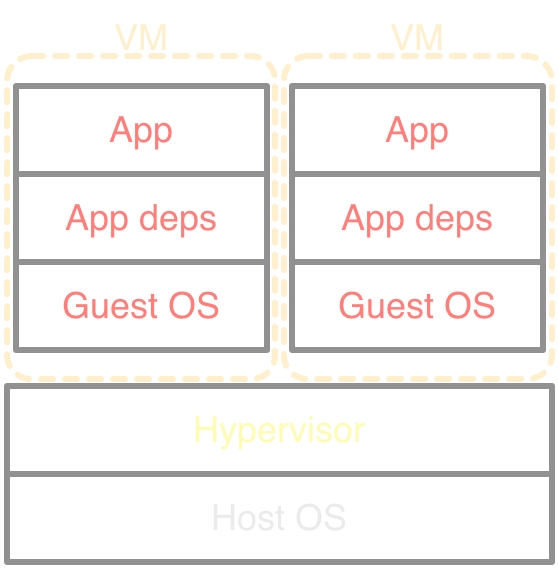
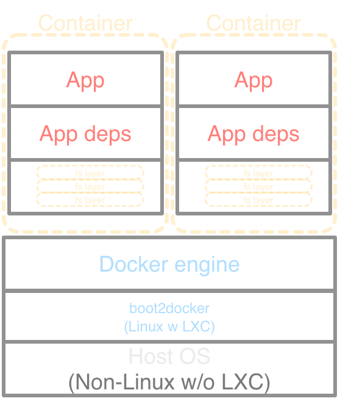
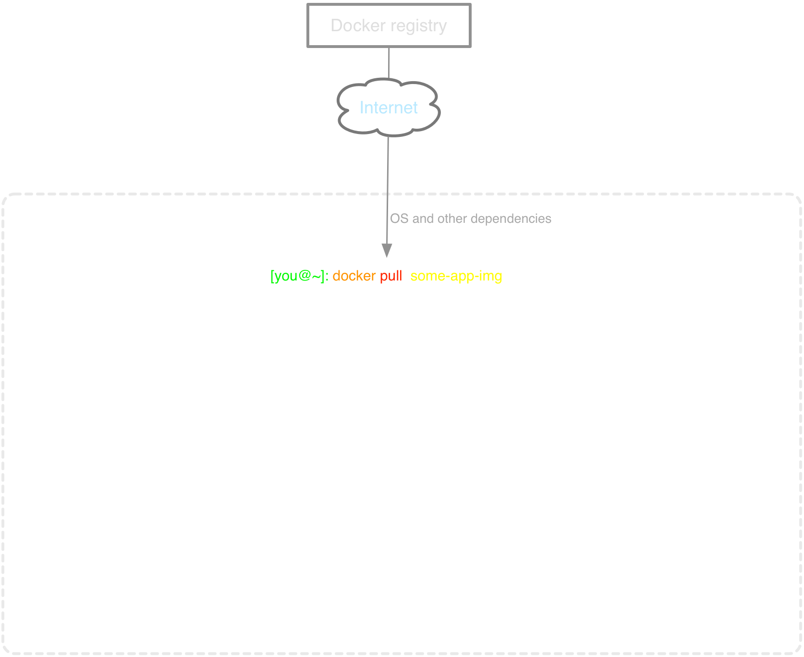
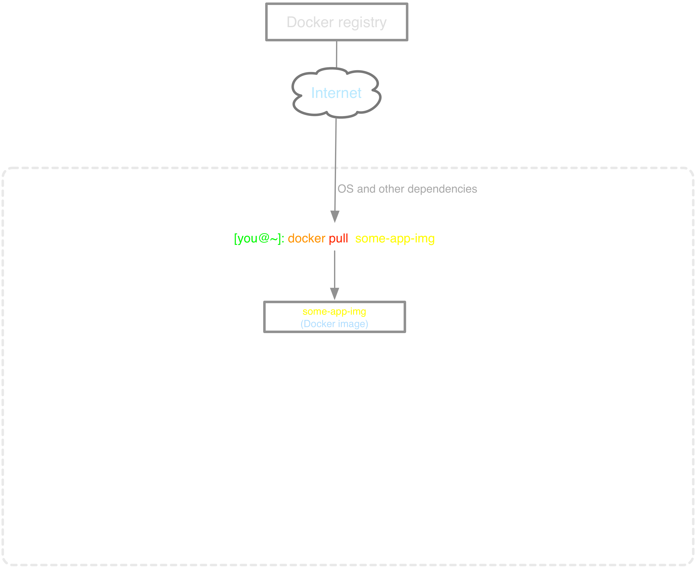

Distributed apps with batteries (env and deps) included.
Rodrigo Martell
Apr 2015
Docker != VM
Think VM, but lighter and focused.
-

-

-
- Heavy (GBs)+ Lightweight (MBs)
-
- Slow start (mins)+ Quick start (secs)
-
- Not so portable+ Pretty portable
-
- Pseudo-inheritance hard.+ Pseudo-inheritance baked-in.
Docker != VM
Non-LXC stack (OS X, Windoze).

Start to finish
Quick start in one diagram!





Start to finish
Cook your own in one diagram!


Networking
(Local)


Networking
(Multiple hosts)

Example time!
Switch to terminal
All examples and code available at: github.com/coderigo/docker-monash
- Nginx web server
- Single node MPI programs : Hello world and MatMult
- Multi node MPI programs : Hello world and MatMult
- ZHDP: Zetaris Hadoop distro using Docker under the hood
References and more learning
- Docker Machine Create and fire off commands on Docker hosts from your local machine anywhere (cloud, local machine, etc).
- Docker Swarm. Native clustering for Docker.
- Serf. Cluster self-awareness and event handler. Not part of Docker but useful and interesting to play with.
- Weave. Virtual networking of containers running anywhere (multiple hosts, clouds, etc). Very handy.
- Docker. THE official site. Full of resources and docs. Great and getting better.
- Patience. As with any new tool, there are kinks and things that are hard to get one's head around initially. So a bit of patience and reading glasses is good to have on tap.
Code & Slides
Reach out
au.linkedin.com/in/rodrigomartell